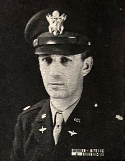

Jesse Marcel
Air Force intelligence officer, 1907 to 1986

The intelligence officer of the 509th Bomb Group at Roswell and the first officer sent to investigate the debris in July 1947, which the Army identified as a weather balloon. 1
In 1978, retired, he told ufologist Stanton Friedman he believed the debris was extraterrestrial, which revived the Roswell story. His son spent decades saying his father had shown him debris with purple hieroglyphics. 1
Open in the interactive Watcher
Related
- Roswell
- Roswell revived Roswell revived, 1978
Sources
- Jesse Marcel Wikipedia